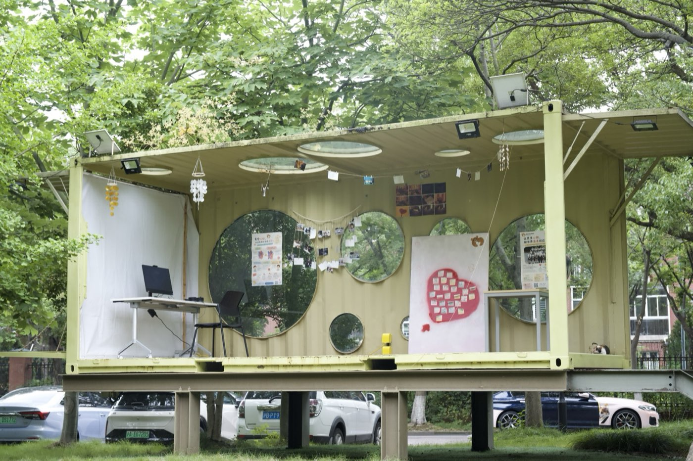

Newest project
The Sound of Hope
An immersive exhibition that transformed the school treehouse into a space for health education and emotional reflection. Through real heartbeat recordings of children who have recovered from congenital heart disease (CHD), patient stories, and visual displays, the project raises awareness of CHD and encourages greater empathy.